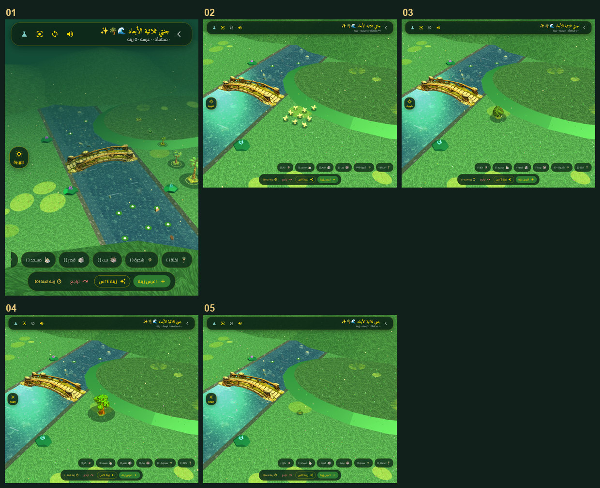
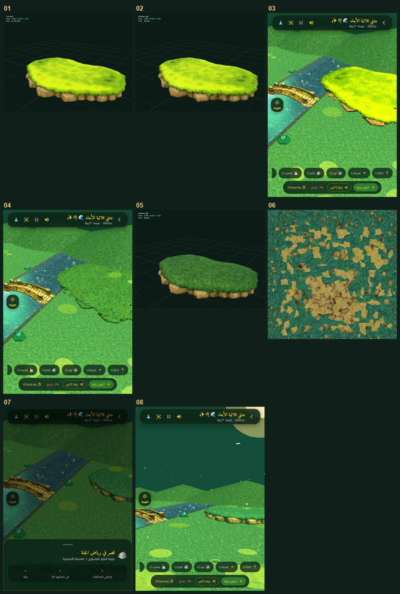
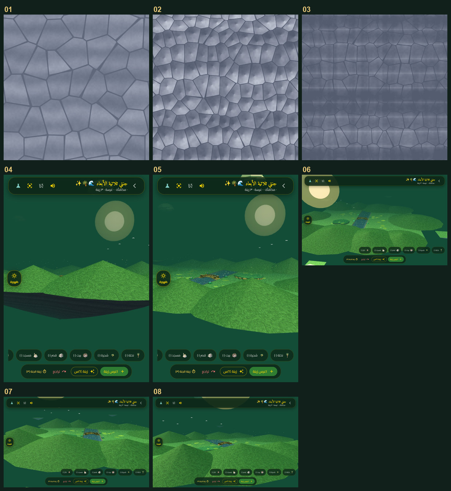

سجل تطوّر المشهد ثلاثي الأبعاد

المرحلة ١الأشجار والمراتب
استبدال المجسّمات الإجرائية بأصول حقيقية، وضبط سلّم الأحجام والدفن في الأرض.

المرحلة ٢الهضبة
رفع الهضبة الوسطى من قرص مسطّح إلى مجسّم بجرف صخري، بلا مساس بمواضع الزرع.

المرحلة ٣الجزيرة الطافية
تحويل الأرضية إلى كتلة بسماكة: جرف صخري، جزر صغيرة طافية، وضوء ارتداد.
 المرحلة ٤
المرحلة ٤
بيئة الجزيرة الطبيعية
٢٤٥ نسخة من FreeLowPolyForest، كادر افتتاح بميل ٣٦° يرى الجزيرة كلها، وهضبة بخامتها الأصلية بعد حذف حلقة الصخور — ودرس الـ٤٠٤ وإصلاح المشهد الأسود.
كيف التُقطت
كل اللقطات من Chrome حقيقي يشغّل المشهد محليًا عبر
flutter run -d web-server. لا صور مركّبة ولا محاكاة. الصور في المراحل
الثلاث الأولى مضغوطة JPEG بجودة ٨٨٪ وعرض أقصى ١٢٠٠px لتقليل حجم المستودع،
ولقطات المرحلة ٤ كما خرجت من الجهاز. لقطة الكادر (04)
من تبويب ٤١١×٦٥٣ بكسل (DPR 1)، ولقطة الهضبة (05)
مقتطع مكبّر ×٣ منها (٥٧٠×٤٢٠)، والتُقطتا بعد إصلاح
_waitForSceneHost() لا قبلها.
pubspec.yaml.